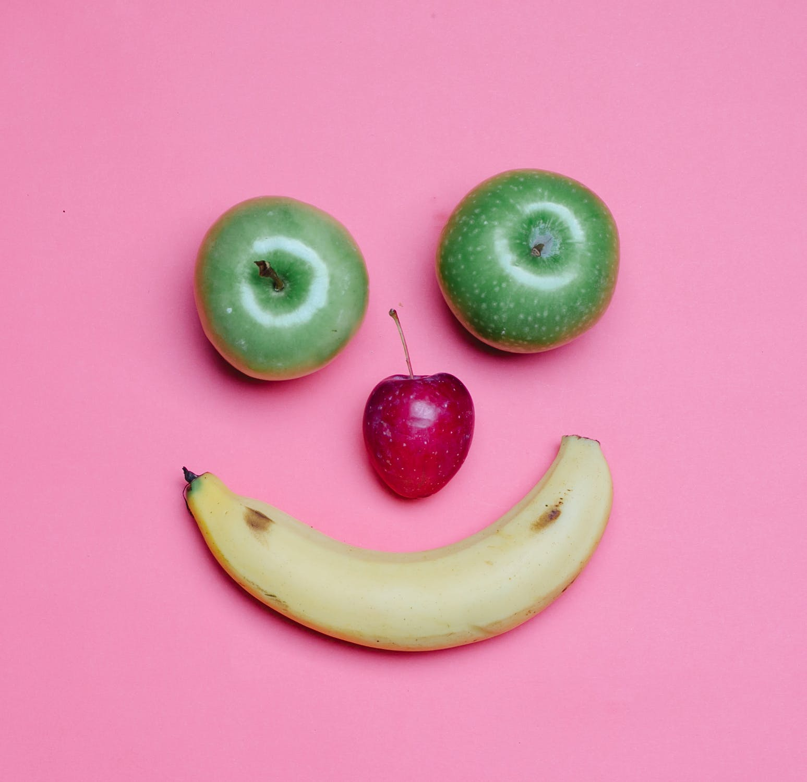
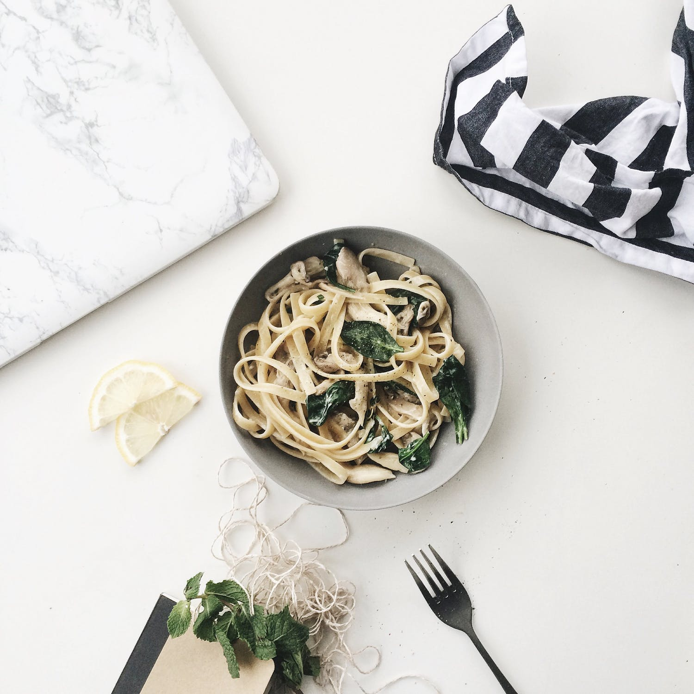
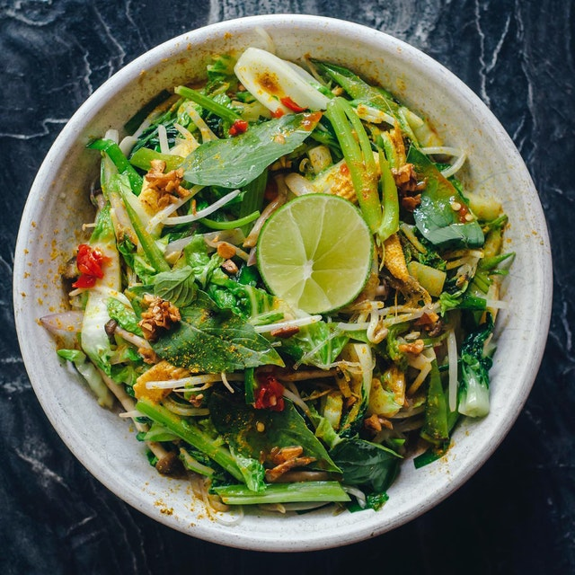

About us
Lovers of plant-based foods

Sharing our favourite meals each week!

Living in London
Recipe of the week

Method
- Mix together the coriander, chilli and sunflower oil in a bowl. Fry half the mixture in a wok over a medium heat, and stir-fry for 1 minute. Remove and set aside.
- Add the remaining flavoured oil to the wok and stir-fry the shallots for 1 minute. Add the sugar and the eggs, and cook for 1 minute, stirring frequently to scramble the eggs as they begin to set.
- Stir in the oyster sauce, lime juice, noodles, and beansprouts. Stir-fry for 2 minutes, then add the spring onions and half the peanuts. Toss everything together for 1-2 minutes, or until piping hot.
- To serve, divide between 4 individual bowls, scatter the remaining peanuts on top, and serve with lime wedges.
Ingredients
- 2tbsp chopped coriander
- 1 red bird's eye chill
- 4 tbsp sunflower oil
- 4 shallots, finely chopped
- 1tbsp palm sugar or light brown sugar
- 4 large eggs, lightly beaten
- 2 tbsp oyster sauce
- juice of 1 lime
- 350g flat rice noodles
- 250g beansprouts
- 4 spring onions
- 115g unsalted roassted peanuts
- 1 lime, cut into 4 wedges, to serve